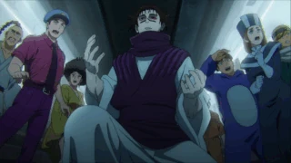
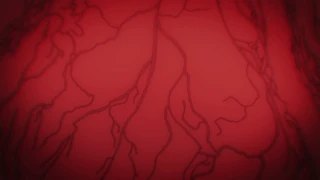
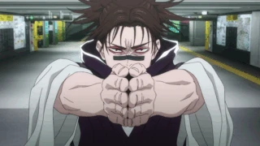
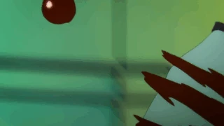

Личность
Чосо очень спокойный и сдержанный человек, довольно тихий и склонный затеряться на заднем плане социальных групп. Обычно у него скучающее выражение лица, и в большинстве ситуаций он выглядит отчужденным и полностью отстраненным. Испытывает сильную привязанность к своим братьям, будучи чрезвычайно злым, когда им манипулируют с намерением причинить вред его братьям.
Способности и силы
Общий уровень навыков: еще существуя как проклятый объект, Чосо был умен и обладал самосознанием, что позволяло ему оттачивать свои техники проклятия в течение 150 лет. К моменту своего воплощения Чосо уже освоил манипуляции с кровью до уровня, который намного превосходит нынешнего Норитоси Камо.
Высокий тактический интеллект: его мастерство в манипулировании кровью позволило Чосо свободно экспериментировать и использовать свои способности уникальными для него способами. Он применяет технику разными способами во время боя, чтобы переломить ситуацию в свою пользу.
Огромная проклятая энергия: Чосо и его братья были созданы Кэндзяку в качестве эксперимента по превышению проклятой энергии. Чосо постоянно контролирует свою кровь с помощью проклятой энергии. Норитоси Камо был поражен количеством концентрированной проклятой энергии в нем.
Мастер рукопашного боя: Чосо превосходен в рукопашном бою и смог одолеть двух сильных бойцов, которые сражаются исключительно на близком расстоянии - Юдзи и Наою Зенин.
Проклятые техники:
- Манипуляция с кровью
- Врожденная техника Чосо позволяет ему управлять собственной кровью. Как заявил Чосо, из-за того, что Норитоши Камо смешал свою кровь с кровью матери Чосо во время экспериментов над ней, врожденная техника Чосо фактически является унаследованной техникой Клана Камо.
- Ядовитая кровь:
- После успешного ранения Урауме, Чосо показал, что, как и два его младших брата, его кровь также обладает ядовитыми свойствами, которые могут даже смертельно ранить могущественного проклятого пользователя.
- Кровная связь:
- Чосо подразумевал, а позже подтвердил, что он обладает способностью «чувствовать любые преобразования», происходящие с теми, с кем он связан кровью. Это видно, когда он смог немедленно обнаружить смерть своих младших братьев, из-за того, что смерть была окончательной трансформацией организмов. Как показано с Юдзи Итадори это происходит, когда он испытывает видение прямо в момент «смерти» его родственников.>
- Изгнание нечистой силы:
- Чосо выпускает поток крови, способный прорезать человеческие тела.
- Конвергенция:
- Техника, которая сжимает и конденсирует кровь до предела. Это одна из наиболее используемых техник Чосо, поскольку она является ключом к его самым мощным атакам, Копье крови и Суперновая. Существует традиционная стойка для активации Суперновая, но Чосо использовал и другие способы ее применения. 
- Пронзающая кровь:
- Чосо хлопает в ладоши и выпускает поток крови из кончиков пальца, образовывая стрелу. Как заметил Норитоси Камо, версия этой техники Чосо невероятно мощная, имея огромное давление, сосредоточенное на его ударах, что было показано, когда он использовал эту технику против Ураумэ. Чосо может использовать эту технику и чтобы вводить свою ядовитую кровь противникам.
- Суперновая:
- После использования Конвергенции для создания нескольких маленьких сфер крови, Чосо заставляет шары стрелять во всех направлениях, как пули. Он также может направить одну большую сферу, которая взрывается для еще более разрушительной атаки.
- Кровавое лезвие:
- Техника формирует и усиливает смертоносность крови, вращая ее с высокой скоростью, позволяя Чосо формировать из крови вне своего тела кинжал.
- Текущая красная чешуя:
- Чосо манипулирует кровью в своём теле, включая температуру, частоту пульса, количество красных кровяных телец, и их состав, так что он может увеличить скорость своего тела и силу. Когда эта техника активирована, над каждым его глазом появляются две вертикальные линии.
- Струящаяся красная чешуя:
- Чосо усиливает Струящуюся красную чешуйку, чтобы увеличить возможности своего тела (физическую силу) в еще большей степени, чем обычно. Также он может усилить определенные функции организма, такие как фокусировка на глазных мышцах, чтобы читать движения противника. Когда Чосо активирует эту версию техники, три кровавых пятна, проходящие через его нос и глаза, на концах приобретают форму наконечника стрелы.
- Кровавый метеорит: 
- Техника, которая укрепляет кровь пользователя. Чосо укрепляет часть своей крови и бросает ее в противника. Он также использовал его для затвердевания крови внутри своего тела, чтобы укрепить себя, несмотря на риск тромбоза.
- Король крыльев:
- Техника, имитирующая технику Эсо "Максимум: Король крыльев" создавая ореол крови, из которого вырастают четыре осиных крыла, хотя и меньшего размера, чем оригинальная техника. Эти крылья среднего размера для создания векторных линий крови, которые можно использовать в нападении. Чосо использовал эту технику как отвлекающий маневр, чтобы окружить Кэндзяку.
- Преобразование крови:
- Уникальная способность, которая присуща только "Картинам Смерти". Чосо может преобразовывать свою проклятую энергию в кровь. Пока у Чосо достаточно проклятой энергии, он может предотвратить свою смерть от сильной потери крови. Также он может выпускать буквально волну крови, не испытывая при этом потери крови.